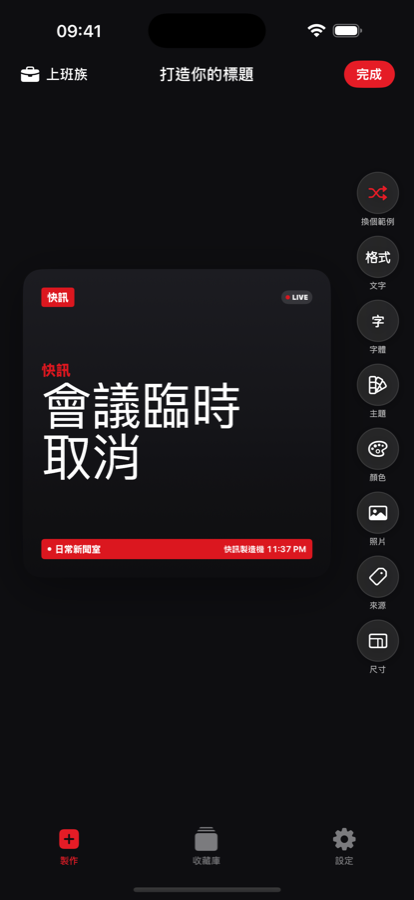
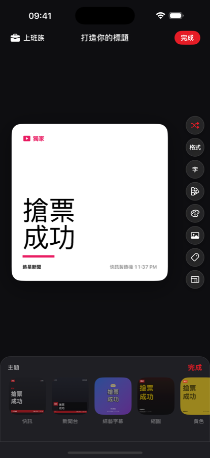
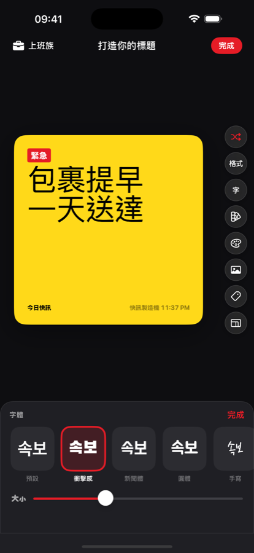
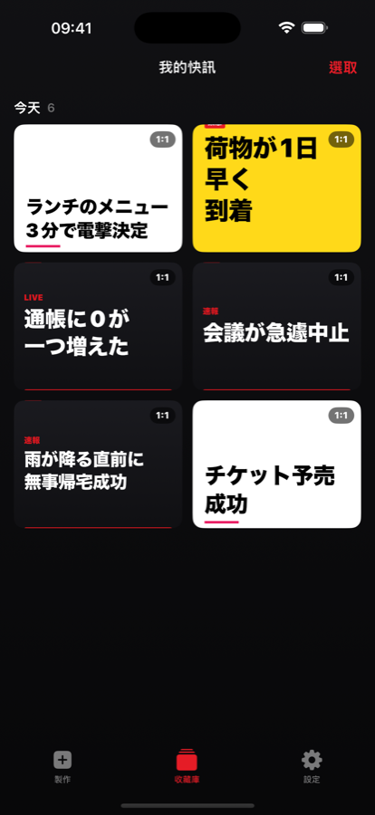

今天發生的事，一句話就夠了。快訊製造機會把它變成紅色快訊橫幅風格 — 選主題、選字型、貼上自己的去背照片，存成迷因就完成。

今天發生的事，不論大小，一句話就是標題。
從快訊紅到報紙版面，14 種卡片主題，12 種字型任你搭配心情。
依需求比例輸出成圖片，直接丟進群組聊天室。
快訊製造機把一天中最微不足道的瞬間，升級成紅色橫幅、粗體大字、全大寫的正式快訊。
像真實新聞畫面一樣預覽全部 14 種卡片主題，再選出符合心情的字型。



快訊、跑馬燈字幕、綜藝字幕、報紙、雜誌、緊急快訊等情境風格。
粗黑體、手寫、明體、圓體 — 每則標題都有自己的語氣。
自動去背，讓任何照片都能變成新聞裡的主角。
學生、上班族、追星、健身、戀愛、寵物、求職、遊戲、股票，現成句子直接套用。
正方形、動態消息 4:5、限時動態 9:16、橫式 16:9 — 依發佈平台輸出。
所有處理都在裝置端完成。免費、僅限 iPhone，不需註冊。